UCD: Unlearning in LLMs via Contrastive Decoding
Abstract
Machine unlearning aims to remove specific information, e.g. sensitive or undesirable content, from large language models (LLMs) while preserving overall performance. We propose an inference-time unlearning algorithm that uses contrastive decoding, leveraging two auxiliary smaller models, one trained without the forget set and one trained with it, to guide the outputs of the original model using their difference during inference. Our strategy substantially improves the tradeoff between unlearning effectiveness and model utility. We evaluate our approach on two unlearning benchmarks, TOFU and MUSE. Results show notable gains in both forget quality and retained performance in comparison to prior approaches, suggesting that incorporating contrastive decoding can offer an efficient, practical avenue for unlearning concepts in large-scale models.
1 Introduction
Large Language Models (LLMs) achieve impressive general capabilities thanks to massive training datasets and compute. However, these capabilities raise significant safety and security concerns, including copyright violations (Karamolegkou et al., 2023), harmful content generation, and retention of dangerous knowledge (e.g., bioweapon instructions) (Shevlane et al., 2023). Retraining models to address these issues by excluding problematic data is impractical at scale. This has led to growing interest in efficient methods for machine unlearning, which aim to remove specific information from trained models without retraining.
The field of machine unlearning began with a focus on removing the influence of specific training data points from trained machine learning models (Cao & Yang, 2015; Bourtoule et al., 2021; Neel et al., 2021; Sekhari et al., 2021; Ghazi et al., 2023; Suriyakumar & Wilson, 2022). This initial motivation arose primarily from compliance with emerging privacy regulations, such as the EU’s General Data Protection Regulation (GDPR) (Voigt & Von dem Bussche, 2017) and the California Consumer Privacy Act (CCPA) (CCP, 2018), both of which enforce the Right to be Forgotten. More recently, researchers concerned with AI safety have broadened the scope of machine unlearning to also include removing unwanted or harmful knowledge from large language models (Li et al., 2024; Barez et al., 2025; Zhang et al., 2023b).
So far, two broad classes of unlearning algorithms have been proposed for LLM unlearning: finetuning-based approaches and representation-engineering approaches. Finetuning algorithms define an objective to represent “unlearning” and optimize it using samples of data to be forgotten (i.e., the forget set). The canonical example is gradient ascent, which maximizes empirical loss on the forget set. Extensions of this approach incorporate additional loss terms to maintain model utility (Jang et al., 2022; Yao et al., 2023a; Chen & Yang, 2023; Schwarzschild et al., 2024) or modify alignment procedures, such as direct preference optimization (Rafailov et al., 2024). Representation-engineering methods propose objectives to modify internal representations of the model with respect to the forget set, typically by projecting them onto random or orthogonal subspaces (Li et al., 2024). A shortcoming of both of these classes of methods is that they are expensive to run and suffer from poor forget-utility tradeoffs (Shi et al., 2024).
Motivated by recent advances in inference-time methods that improve reasoning and alignment without extensive retraining, we propose Unlearning via Contrastive Decoding (UCD), a novel inference-time unlearning algorithm inspired by contrastive decoding principles (Li et al., 2023). UCD leverages two small auxiliary models, one trained exclusively on the forget set and another trained on the retain set, allowing it to effectively remove undesirable knowledge at inference (Figure 1). This approach significantly improves the forget-utility tradeoff and sets new state-of-the-art benchmarks on established unlearning datasets (TOFU and MUSE News). Additionally, due to its computational efficiency, UCD enables practical unlearning even on extremely large models such as Llama2-70B, a task previously infeasible with existing approaches. Our main contributions are:
- •
Contrastive Decoding-Based Unlearning: We introduce UCD, an efficient inference-time unlearning algorithm utilizing two auxiliary models trained separately on forget and retain data. Whenever it is possible to obtain a clean model trained solely on the forget set, or when the data is sufficiently separable to allow targeted fine-tuning, UCD can be easily applied.
基于对比解码的遗忘：我们提出 UCD，这是一种高效的推理时遗忘算法，使用分别在遗忘数据和保留数据上训练的两个辅助模型。只要能够获得仅在遗忘集上训练的干净模型，或者数据具有足够可分性、可以进行定向微调，就能方便地应用 UCD。 - •
Superior Forget-Utility Tradeoff: UCD significantly outperforms existing methods on standard machine unlearning benchmarks (TOFU, MUSE), achieving forget performance indistinguishable from retraining and improved utility due to contrastive decoding’s enhanced text quality.
更好的遗忘与效用权衡：UCD 在标准机器遗忘基准 TOFU 和 MUSE 上显著优于既有方法；其遗忘表现与重新训练无法区分，同时由于对比解码改善文本质量而获得更高效用。 - •
Scalability to Significantly Larger Models: Unlike existing weight-modifying unlearning methods constrained by computational costs, UCD demonstrates practical inference-time unlearning on significantly larger models, including Llama2-13B and Llama2-70B, only requiring 2 L40s for unlearning on Llama2-13B and 4 NVIDIA H200s for unlearning on Llama2-70B. Whereas all pre-existing baselines required at least 2 A100s for unlearning on Llama2-13B and are infeasible on Llama2-70B on 8 H200s.
扩展到显著更大的模型：既有的权重修改型遗忘方法受计算成本限制，而 UCD 展示了在 Llama2-13B 和 Llama2-70B 等显著更大模型上进行实际推理时遗忘的能力；对 Llama2-13B 进行遗忘只需 2 张 L40，对 Llama2-70B 则只需 4 张 NVIDIA H200。相比之下，所有既有基线在 Llama2-13B 上进行遗忘都至少需要 2 张 A100，并且即使使用 8 张 H200，也无法在 Llama2-70B 上运行。
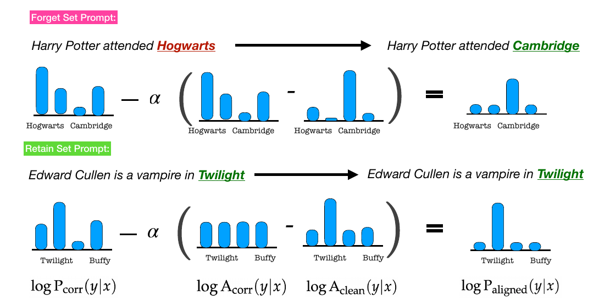
2 Background and Related Work
Machine unlearning.
Our work builds on a growing body of research on machine unlearning (Bourtoule et al., 2021; Nguyen et al., 2022; Cao & Yang, 2015; Gupta et al., 2021; Suriyakumar & Wilson, 2022; Sekhari et al., 2021; Ghazi et al., 2023; Kurmanji et al., 2023; Lev & Wilson, 2024; Łucki et al., 2024), which aims to develop methods that efficiently modify trained machine learning models to forget specific portions of their training data. In the case of classical discriminative models, the motivation often stems from privacy concerns, particularly the need to protect individuals whose data may have been used during training. A major driver behind this line of research was the introduction of Article 17 of the European Union’s General Data Protection Regulation (GDPR), which codifies an individual’s “right to be forgotten”(European Union, 2016). Various other legislations have followed including California Consumer Privacy Act (CCPA), Canada’s proposed Consumer Privacy Protection Act (CPPA)), and more recently in Australia (Karp, 2023). More recently, the scope of machine unlearning has expanded to include modern generative AI models, which pose additional challenges such as the potential reproduction of copyrighted material, generation of harmful or explicit content, and leakage of sensitive training data (Zhang et al., 2023a; Carlini et al., 2021).
Unlearning and alignment in LLMs.
Machine unlearning for Large Language Models (LLMs) has emerged as a rapidly growing area of research (Liu et al., 2024a; Jang et al., 2022; Kumar et al., 2022; Zhang et al., 2023b; Pawelczyk et al., 2023; Yao et al., 2023a; Zhang et al., 2024; Wang et al., 2024; Jia et al., 2024; Lu et al., 2022; Liu et al., 2024b; Ishibashi & Shimodaira, 2023; Thaker et al., 2024; Kadhe et al., 2024; Fan et al., ). Given the inherent difficulty of exact unlearning, most existing approaches rely on approximate methods such as fine-tuning and representation engineering (Yao et al., 2023a; Eldan & Russinovich, 2023; Jia et al., 2024; Zhang et al., 2024; Li et al., 2024; Ilharco et al., 2022; Liu et al., 2022) or prompt-based and in-context learning techniques (Thaker et al., 2024; Pawelczyk et al., 2023; Liu et al., 2024a). Numerous benchmarks and evaluations have been developed to measure the effectiveness of these heuristical unlearning algorithms (Maini et al., 2024; Shi et al., 2024; Li et al., 2024). We also highlight that test-time methods have started to gain prominence in LLM alignment, specifically using token-level rewards to guide generations (Xu et al., 2024). We view our work as a similar family of methods where UCD provides a new reward designed for unlearning and representing the next token distribution if the model was trained without the forget set.
We defer a detailed description of the baselines that we compare to in our experiments, as well as additional related work on model-editing for unlearning, to Appendix A.
3 UCD: Unlearning via Contrastive Decoding
This work focuses on the problem of machine unlearning for large language models (LLMs). Given an initial model , referred to as the corrupted or reference model, that has been trained on a dataset , the central objective of machine unlearning is to effectively erase all information related to a designated subset of the dataset , termed the forget set, while preserving the model’s performance on the remaining subset , known as the retain set.
We approach the unlearning problem by leveraging auxiliary models to adjust the sampling distribution of the reference model. In particular, suppose there exists some public dataset that does not contain , and a clean base model trained on . Using this base model, we will first train two auxiliary models and by separately fine-tuning on the forget set and the retain set , respectively. Without loss of generality, we assume the base model is significantly smaller than the reference model , making the fine-tuning process to obtain and substantially less resource-intensive compared to directly fine-tuning or retraining . For example, could be a Llama2-7B model, while could be a much larger Llama2-70B model, thus significantly reducing computational requirements.
Unlearning via Contrastive Decoding (UCD). We utilize the contrastive decoding approach of Li et al. (2023) to define the logits for the returned model , i.e. we set
| (1) |
where denotes a hyper-parameter (set to 0.1 in Li et al. (2023)). Correspondingly, once we have the logits corresponding to , we can generate next token using either:
- •
Greedy Decoding (e.g. max-sampling): Given an input sequence , select the next token by choosing the one with the highest predicted probability according to model :
贪心解码，例如最大值采样：给定输入序列 x，根据模型 \mathrm{P}_{\mathrm{aligned}} 选择预测概率最高的词元作为下一词元 y，即 y=\arg\max_{y^{\prime}}\log\mathrm{P}_{\mathrm{aligned}}(y^{\prime}|x)。 - •
Stochastic Decoding (e.g. nucleus sampling): Given an input sequence , randomly select the next token based on normalized distribution given by the subset of tokens from whose cumulative probability exceeds some threshold , where controls the amount of randomness.
随机解码，例如 nucleus sampling：给定输入序列 x，从 \mathrm{P}_{\mathrm{aligned}} 中累计概率超过某一阈值 p 的词元子集所给出的归一化分布中，随机选择下一词元 y；p 控制随机程度。
Our unlearning update (1) modifies the logits of the reference model using the difference between the logits of the auxiliary models and .11 1 While (1) represents the output of contrastive decoding by , we emphasize that no new model is computed; instead, only the logits—used to define the next-token distribution—are modified. Recall that
This contrastive signal forms the basis of our approach: we can unlearn by simply adjusting the logits of the reference model using the difference in token preferences between auxiliary models trained with and without the forget set. For illustration, if we prompt the model with a query about a data sample that should be erased (i.e. , both and are likely to be high. Thus, the update in (1) reduces the logit for , thereby lowering its probability in the generative process and suppressing this information. More generally, when is large and positive, i.e., favors significantly more than , the update decreases and thereby reduces the likelihood of generating . Conversely, when is large and negative, indicating that prefers more than , the update increases and thereby increases the probability of .
Unlearning via Contrastive Suppression (UCS).
While UCD can both increase or decrease the probability of outputting various tokens in , depending on the sign of the contrastive signal , in various cases, we may want to be more conservative and only make a relative decrease in logits (instead of both increasing and decreasing them using the auxiliary models). Towards that end, we also propose an update step that clips off the impact of contrastive decoding when the contrastive single is negative:
where is a hyperparameter. Again, after computing the new logits, we can sample using a greedy or stochastic decoding approach.
3.1 Why is our Contrastive Decoding Approach Effective for Unlearning?
We offer an initial intuition for the potential effectiveness of UCD. Although we do not present this as a comprehensive explanation of the observed behavior, we believe it sheds light on some of the underlying dynamics at play. Throughout this section, let denote the model we would have obtained (corresponding to the corrupted model ) if we had trained the given reference model without the forget set .
First, as a sanity check, observe that if the auxiliary models are chosen to be the same size as the underlying models, that is, and , and we set , then:
| (2) |
In this special case, the contrastive differencing update in (1) exactly recovers the next token distribution corresponding to the model that is retrained-from-scratch on the retain set. This illustrates, in idealized conditions, how our approach enables unlearning.
We now relax this strong equivalence assumption to examine more practical settings where the auxiliary models differ in scale or capacity from the underlying models.
Proposition 1.
Suppose that for any input prompt , the auxiliary models and satisfy the relation:
| (3) |
for any token , where denotes the initial corrupted model, and denotes the clean model (obtained by retraining-from-scratch without the retain set). Then, there exists a choice of that is independent of such that the contrastive decoding procedure in (1) ensures that .
The assumption in (3) formalizes the intuition that small auxiliary models can generalize the token-level preference trends observed in large models, even if the magnitude of those preferences is not preserved. Specifically, (3) suggests that if there exist tokens for which the logit difference is large, indicating that the corrupted model strongly prefers token compared to the clean model (and hence should be suppressed), then a similar trend should be observable in the auxiliary models and .
The proof is straightforward. Suppose the constant of proportionality in (3) is , i.e.,
| (4) |
Then, setting in the UCD update (1) ensures that , thereby recovering the target unlearning model exactly. While the strict proportionality in (3) may be too strong to hold exactly in practice, the UCD update remains effective when this relationship holds approximately. Specifically, suppose there exist constants such that for any token with , we have:
| (5) |
In this case, choosing approximately aligns with , suppressing undesirable completions associated with the forget set while boosting completions consistent with the retain set.
4 Experimental Setup
We evaluate UCD on three different tasks from two different unlearning benchmarks: Task of Fictitious Unlearning (TOFU) (Maini et al., 2024) and Machine Unlearning Six Ways Evaluation (MUSE) (Shi et al., 2024). All of our evaluations are on Llama2-13B as and Llama2-7B as our auxiliary models, . This is the first time, to our knowledge, that existing unlearning baselines have been studied on larger models than Llama2-7B. Below we describe the specific tasks from each benchmark and the metrics used to evaluate the unlearning methods.
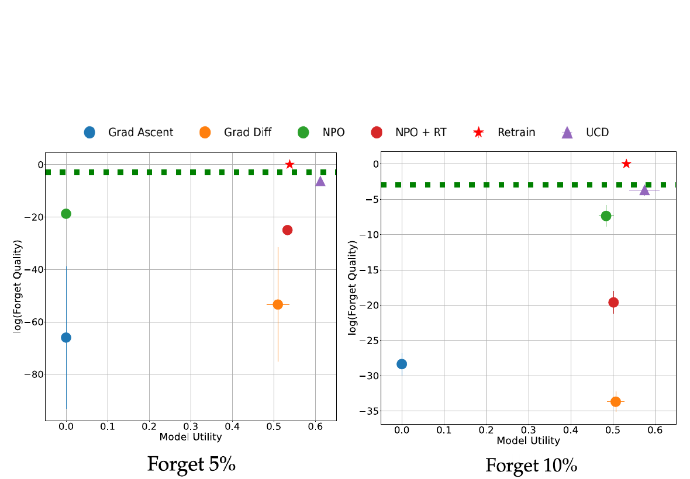
TOFU.
TOFU contains 200 GPT-4 generated author profiles, with 20 question-answer pairs for each author. The generated profiles were not contained in the pretraining data, resulting in a suitable setup for studying unlearning. We pick two tasks from TOFU: Forget 5% and Forget 10%, which represent forgetting 5% and 10% of the data, respectively. We evaluate the unlearning algorithms on these tasks according to four different sets of QA pairs: forget set, retain set, real world authors, and real world facts. More details about these sets can be found in the original TOFU paper (Maini et al., 2024). We focus on measuring (Forget Quality) and Model Utility as described in Maini et al. (2024). Forget quality measures how indistinguishable the unlearned model is from the gold-standard retrained model. Indistinguishability is formalized as the -value of a Kolmogorov-Smirnov test being above 0.05. Model utility measures the performance of the model on the retain set, real world authors, and real world facts sets. We report the additional metrics from TOFU of: ROUGE-L recall, probability, and truth ratio in the appendix.
MUSE.
MUSE represents two different corpuses of text: news articles and books. The News task contains BBC articles after 2023, and the Books task contains all of the Harry Potter books. We focus on the News task in this work because we were unable to obtain a “clean” model for the Books task. Since we know the cutoff data for the Llama2 models this makes it easy to have clean models for the News task. Meanwhile, obtaining a clean model for Llama2 for the Books task would require pretraining a model from scratch. Similar to TOFU, we evaluate both the forget quality and model utility. For forget quality, we measure the verbatim memorization of the forget set (VerbMem on ), the ability to infer membership in the training data (PrivLeak (Shi et al., 2023)), and knowledge retention via QA on the forget set (KnowMem on ). Model utility is measured by knowledge retention via QA on the retain set (VerbMem on .
Training and Unlearning.
For all three tasks, we compare our method against the following baselines: gradient ascent (Maini et al., 2024), gradient difference (Liu et al., 2022), negative preference optimization (NPO) (Zhang et al., 2024), and NPO with a retain loss (NPO + RT). All of these baselines are described in Appendix A and were run following the open-source implementations from both the TOFU and MUSE benchmarks. We pick this subset of methods out of the ones discussed based on their performance in prior works on the chosen tasks. We average all of the results for the baselines and our method over three random seeds. We use a range of compute depending on the algorithm. Specifically, going from two NVIDIA L40s with 48GB of VRAM to 8 NVIDIA H200s with 141GB of VRAM depending on out of memory errors encountered when running on smaller amounts of compute. We elaborate more on this need to use a range of compute and how UCD is much more efficient compute wise.
Algorithm 算法 |
VerbMem on 遗忘集 \bm{\mathcal{D}_{\texttt{\bf forget}}} 上的逐字记忆（越低越好） |
PrivLeak 隐私泄漏 |
KnowMem on 遗忘集 \bm{\mathcal{D}_{\texttt{\bf forget}}} 上的知识记忆（越低越好） |
KnowMem on 保留集 \bm{\mathcal{D}_{\texttt{\bf retain}}} 上的知识记忆（越高越好） |
|---|---|---|---|---|
Retrain 重新训练 |
20.99 ± 0.42 | 0.00 ± 0.00 | 38.08 ± 2.13 | 46.15 ± 1.49 |
UCD UCD |
20.5 ± 0.56 | 9.55 ± 6.65 | 36.38 ± 0.9 | 43.87 ± 1.37 |
Grad Ascent 梯度上升 |
0.0 ± 0.0 | 58.97 ± 8.25 | 0.0 ± 0.0 | 0.0 ± 0.0 |
Grad Diff 梯度差分 |
0.0 ± 0.0 | -23.41 ± 3.07 | 0.0 ± 0.0 | 0.0 ± 0.0 |
NPO + RT NPO + RT |
1.02 ± 0.83 | 64.58 ± 3.22 | 28.78 ± 2.85 | 34.27 ± 2.16 |
5 Results
5.1 UCD Improves Forgetting-Utility Tradeoff
UCD significantly outperforms the baselines across all three tasks. We report the best performing UCD model based on tuning of over . As shown in Figure 2, for TOFU 5%, UCD achieves indistinguishability from the retrained model and also improves the model utility. We believe that the improvement in utility compared to the retrained model can be attributed to the contrastive decoding approach. Numerous prior works show contrastive decoding improves text quality and diversity (Li et al., 2023; O’Brien & Lewis, 2023). We provide an example of how UCD successfully recovers the retrained model compared to all other baselines in Appendix B. For MUSE, UCD is the closest model to replicating the retrained model (Table 1). UCD overcomes issues of over unlearning / under unlearning (measured by the PrivLeak metric) and poor model utility discussed in the original paper.
5.2 Bootsrapping from Existing Unlearning Algorithms Improves Tradeoff
Next, we address the effectiveness of UCD in the absence of smaller clean models. In this setting, we approximate the clean model—i.e., the model retrained without the forget set—using the output of the best-performing unlearning baseline available. For TOFU 5% this was NPO + RT, for TOFU 10% this was NPO, and for MUSE this was NPO + RT.
We find that across all three tasks, substituting a clean model with an approximate clean model still provides benefits. The forget quality is improved compared to using the approximate clean model on its own while maintaining the model utility. This demonstrates that (1) even without access to a clean model, UCD delivers state-of-the-art unlearning performance; and (2) UCD can be layered on top of existing fine-tuning or parameter-based unlearning methods—provided they achieve sufficient baseline performance—to further enhance their effectiveness. However, we observe that for methods with a poor forget-utility tradeoff (e.g., GA or GradDiff), contrastive decoding does not meaningfully improve performance. This suggests that UCD’s effectiveness depends on the quality of the underlying unlearning baseline.
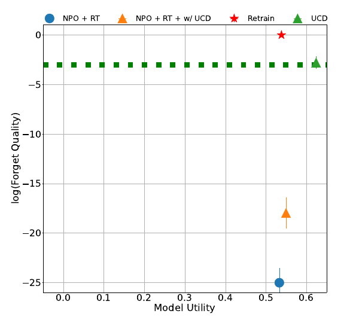
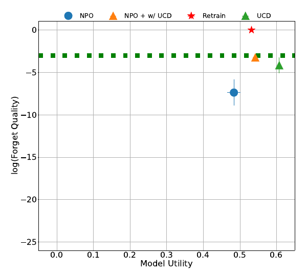
5.3 UCD & UCS Scale to Very Large Models
A significant limitation of current unlearning baselines is their inability to scale efficiently to very large language models (e.g. beyond 7B and 13B) without extensive compute resources. Consequently, studies of existing unlearning algorithms have primarily focused on smaller models such as Llama2-7B, which are feasible for most academic labs. Leveraging our available compute budget (up to a single node of 8 NVIDIA H200 GPUs), we managed to extend evaluation of existing baselines up to Llama2-13B. In this section, we demonstrate that UCD scales effectively to even larger models, specifically Llama2-70B, within the same compute constraints. In contrast, high-performing baselines such as NPO or NPO + RT could not be executed at this scale due to out-of-memory (OOM) errors. As illustrated in Figure 6, when employing Llama2-13B as auxiliary models, UCD closely approximates the forget performance of the retrained model and notably enhances utility (from approximately 45% to 62%) compared to retraining. Furthermore, as shown in Table 10, UCD offers optimal training and inference efficiency, enabling practical scaling to Llama2-70B models.
6 Ablations
6.1 Sensitivity to Sampling Strategy and Hyperparameter-
A key consideration for the wide applicability of our method is its ability to improve the forget-utility tradeoff regardless of the sampling strategy used. We examine two commonly used sampling strategies in production LLMs: greedy and top- (nucleus) sampling (Holtzman et al., 2019), where is set to either 0.7 or 0.9. Recreating the plots and tables from Section 5.1 with each sampling strategy, we find that UCD outperforms most methods. For TOFU, since many of the metrics are computed using the loss, the results are identical between greedy and top- sampling. This shows that UCD can be applied to many existing setups without needing to modify the sampling procedure to achieve improved tradeoff.
We also investigate the sensitivity of UCD to the alpha parameter. We find that for TOFU ideal values are either 0.5 or 1.0 depending on the task. Values lower than 0.5 tended to be too low and resulted in poor forget quality (Figure 12). For MUSE, an alpha value of 1.0 yielded the best performance (Table 13).
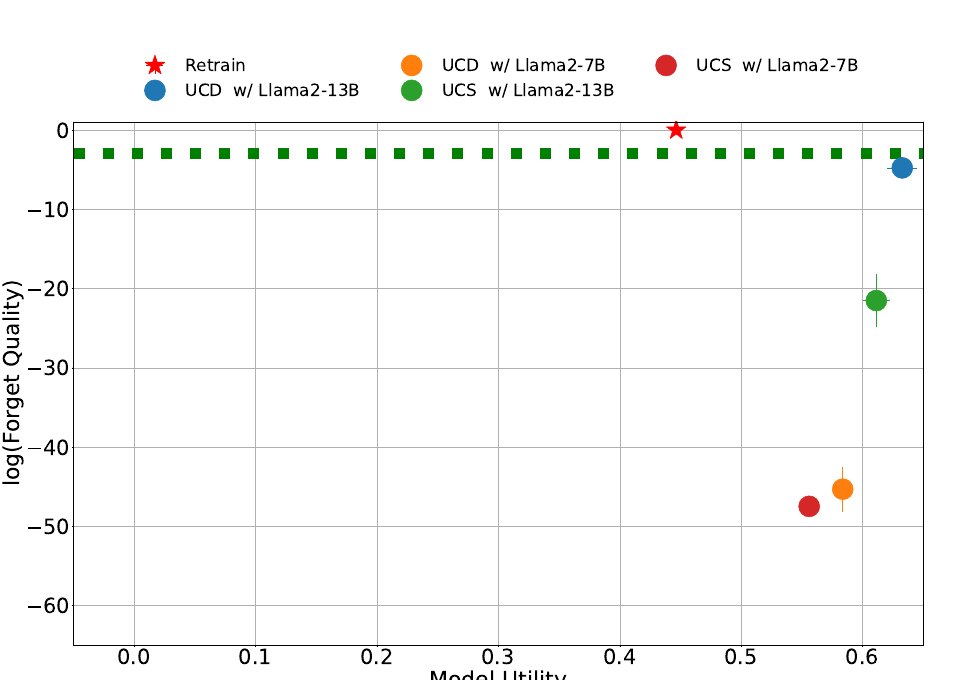
6.2 Suppression vs. Differencing
Finally, we examine the differences between applying UCD (contrastive decoding) and UCS (contrastive suppression) on the TOFU 10% and MUSE News tasks. We already demonstrated some of this difference in Section 5.3. Contrastive decoding achieves the strongest forget-quality versus model-utility tradeoff when clean auxiliary models are available (Figure 15). However, in scenarios where bootstrapping is necessary, i.e., when clean models are replaced by approximations, contrastive suppression tends to yield better tradeoffs, effectively improving forget quality without negatively impacting utility (Table 14). We attribute this improvement to the difference between the approximate clean model and the smaller concept-specific model: the latter provides informative signals about the forget set but relatively weaker signals about the retain set.
7 Discussion and Conclusion
Our proposed method, UCD, offers several significant advantages over existing unlearning approaches. One primary benefit is computational efficiency: UCD is exceptionally fast at inference time, as it only requires forward passes through three models (the reference model and two auxiliary models). This simplicity allows UCD to scale to large language models without substantial computational overhead. Additionally, UCD relies solely on a gray-box update mechanism, requiring access only to logits from the relevant models (, , and ), rather than requiring full access to their parameters or gradients.
Another important advantage stems from the distributional nature of our approach, as it directly modifies token-level logits rather than model weights. Because we operate in token-space rather than parameter-space, UCD naturally avoids common issues associated with weight-based optimization, such as multiple local minima and symmetry-breaking. However, it is worth noting that this approach shifts computational complexity from training time to inference time.
Despite these benefits, UCD also faces several important limitations. Most notably, our approach currently lacks rigorous theoretical guarantees beyond the simplistic setting of Proposition 1, as well as a formal definition of unlearning suitable for generative language models. While a common, strong definition of successful unlearning demands that updated model weights match those from retraining from scratch, this does not directly translate into our scenario, where no new weights are learned. Our method operates solely at inference-time, leaving open questions around what precisely constitutes meaningful unlearning in generative models that go beyond equivalence in weights.
Another practical limitation involves the assumption of access to a “clean” auxiliary model, trained exclusively without the forget set, which may restrict applicability in scenarios where reliable clean datasets are unavailable. Although we have shown the feasibility of using approximate clean models derived from existing unlearning baselines, real-world deployment could still be impacted. Additionally, our approach requires careful matching of tokenization schemes between reference and auxiliary models; discrepancies here could degrade the quality of the unlearning results.
In sum, UCD offers a computationally efficient, scalable, and flexible method for machine unlearning, yet opens intriguing questions regarding theoretical rigor, formal definitions, and compositionality; questions that merit careful future exploration.
Ethics Statement
Like all unlearning techniques, UCD relies on auxiliary models trained on partitioned datasets. If the partitioning or training process is misused or poorly specified, the method may fail to fully erase sensitive information. Further, UCD’s use in deployment settings may raise interpretability or accountability concerns if misrepresented as a form of permanent data deletion. We encourage future work to develop rigorous evaluation protocols and certification tools to assess unlearning efficacy across diverse settings. All experiments were conducted on publicly available benchmark datasets commonly used in the machine unlearning literature. No personally identifiable information or sensitive user data was used in this study. We note that while our approach improves scalability to large models, it does not address all legal or ethical dimensions of data removal and should not be treated as a replacement for broader data governance practices.
Acknowledgements
We thank Angelos Assos and Zhili Feng for the useful discussions. ACW acknowledges support from Simons Collaboration on Algorithmic Fairness and MIT Generative AI Impact Award. AS acknowledges support from ARO through award W911NF-21-1-0328, as well as the Simons Foundation and the NSF through award DMS-2031883.
References
- CCP (2018)
California consumer privacy act of 2018.
https://leginfo.legislature.ca.gov/faces/billTextClient.xhtml?bill_id=201720180AB375, 2018.
题名译文：2018 年加州消费者隐私法案
- Barez et al. (2025)
Fazl Barez, Tingchen Fu, Ameya Prabhu, Stephen Casper, Amartya Sanyal, Adel Bibi, Aidan O’Gara, Robert Kirk, Ben Bucknall, Tim Fist, et al.
Open problems in machine unlearning for ai safety.
arXiv preprint arXiv:2501.04952, 2025.
题名译文：面向人工智能安全的机器遗忘开放问题
- Bourtoule et al. (2021)
Lucas Bourtoule, Varun Chandrasekaran, Christopher A Choquette-Choo, Hengrui Jia, Adelin Travers, Baiwu Zhang, David Lie, and Nicolas Papernot.
Machine unlearning.
In 2021 IEEE Symposium on Security and Privacy (SP), pp. 141–159. IEEE, 2021.
题名译文：机器遗忘
- Cao & Yang (2015)
Yinzhi Cao and Junfeng Yang.
Towards making systems forget with machine unlearning.
In 2015 IEEE symposium on security and privacy, pp. 463–480. IEEE, 2015.
题名译文：通过机器遗忘让系统学会忘记
- Carlini et al. (2021)
Nicholas Carlini, Florian Tramer, Eric Wallace, Matthew Jagielski, Ariel Herbert-Voss, Katherine Lee, Adam Roberts, Tom Brown, Dawn Song, Ulfar Erlingsson, et al.
Extracting training data from large language models.
In 30th USENIX security symposium (USENIX Security 21), pp. 2633–2650, 2021.
题名译文：从大语言模型中抽取训练数据
- Chen & Yang (2023)
Jiaao Chen and Diyi Yang.
Unlearn what you want to forget: Efficient unlearning for llms.
arXiv preprint arXiv:2310.20150, 2023.
题名译文：遗忘你想忘记的内容：面向大语言模型的高效遗忘
- Chowdhury et al. (2024)
Somnath Basu Roy Chowdhury, Krzysztof Choromanski, Arijit Sehanobish, Avinava Dubey, and Snigdha Chaturvedi.
Towards scalable exact machine unlearning using parameter-efficient fine-tuning.
arXiv preprint arXiv:2406.16257, 2024.
题名译文：通过参数高效微调实现可扩展的精确机器遗忘
- Eldan & Russinovich (2023)
Ronen Eldan and Mark Russinovich.
Who’s harry potter? approximate unlearning in llms, 2023.
题名译文：谁是哈利·波特？大语言模型中的近似遗忘
- European Union (2016)
European Union.
Regulation (eu) 2016/679 of the european parliament and of the council of 27 april 2016.
https://gdpr-info.eu, 2016.
General Data Protection Regulation (GDPR).
题名译文：欧洲议会和理事会 2016 年 4 月 27 日第（EU）2016/679 号条例
- (10)
Chongyu Fan, Jiancheng Liu, Licong Lin, Jinghan Jia, Ruiqi Zhang, Song Mei, and Sijia Liu.
Simplicity prevails: Rethinking negative preference optimization for llm unlearning.
In Neurips Safe Generative AI Workshop 2024.
题名译文：简单性更胜一筹：重新思考大语言模型遗忘中的负偏好优化
- Ghazi et al. (2023)
Badih Ghazi, Pritish Kamath, Ravi Kumar, Pasin Manurangsi, Ayush Sekhari, and Chiyuan Zhang.
Ticketed learning–unlearning schemes.
In The Thirty Sixth Annual Conference on Learning Theory, pp. 5110–5139. PMLR, 2023.
题名译文：带票据的学习与遗忘方案
- Gupta et al. (2021)
Varun Gupta, Christopher Jung, Seth Neel, Aaron Roth, Saeed Sharifi-Malvajerdi, and Chris Waites.
Adaptive machine unlearning.
Advances in Neural Information Processing Systems, 34:16319–16330, 2021.
题名译文：自适应机器遗忘
- Holtzman et al. (2019)
Ari Holtzman, Jan Buys, Li Du, Maxwell Forbes, and Yejin Choi.
The curious case of neural text degeneration.
arXiv preprint arXiv:1904.09751, 2019.
题名译文：神经文本退化的奇特现象
- Ilharco et al. (2022)
Gabriel Ilharco, Marco Tulio Ribeiro, Mitchell Wortsman, Suchin Gururangan, Ludwig Schmidt, Hannaneh Hajishirzi, and Ali Farhadi.
Editing models with task arithmetic.
arXiv preprint arXiv:2212.04089, 2022.
题名译文：使用任务算术编辑模型
- Ishibashi & Shimodaira (2023)
Yoichi Ishibashi and Hidetoshi Shimodaira.
Knowledge sanitization of large language models.
arXiv preprint arXiv:2309.11852, 2023.
题名译文：大语言模型的知识净化
- Jang et al. (2022)
Joel Jang, Dongkeun Yoon, Sohee Yang, Sungmin Cha, Moontae Lee, Lajanugen Logeswaran, and Minjoon Seo.
Knowledge unlearning for mitigating privacy risks in language models.
arXiv preprint arXiv:2210.01504, 2022.
题名译文：通过知识遗忘降低语言模型的隐私风险
- Jia et al. (2024)
Jinghan Jia, Yihua Zhang, Yimeng Zhang, Jiancheng Liu, Bharat Runwal, James Diffenderfer, Bhavya Kailkhura, and Sijia Liu.
Soul: Unlocking the power of second-order optimization for llm unlearning.
arXiv preprint arXiv:2404.18239, 2024.
题名译文：SOUL：释放二阶优化在大语言模型遗忘中的力量
- Kadhe et al. (2024)
Swanand Ravindra Kadhe, Farhan Ahmed, Dennis Wei, Nathalie Baracaldo, and Inkit Padhi.
Split, unlearn, merge: Leveraging data attributes for more effective unlearning in llms.
arXiv preprint arXiv:2406.11780, 2024.
题名译文：拆分、遗忘、合并：利用数据属性实现更有效的大语言模型遗忘
- Karamolegkou et al. (2023)
Antonia Karamolegkou, Jiaang Li, Li Zhou, and Anders Søgaard.
Copyright violations and large language models.
arXiv preprint arXiv:2310.13771, 2023.
题名译文：版权侵权与大语言模型
- Karp (2023)
Pual Karp.
Australia to consider european-style right to be forgotten privacy laws.
The Guardian (Jan. 19, 2023).(Visited on 01/19/2023), 2023.
题名译文：澳大利亚将考虑欧洲式“被遗忘权”隐私法
- Kumar et al. (2022)
Vinayshekhar Bannihatti Kumar, Rashmi Gangadharaiah, and Dan Roth.
Privacy adhering machine un-learning in nlp.
arXiv preprint arXiv:2212.09573, 2022.
题名译文：自然语言处理中的隐私合规机器遗忘
- (22)
Kevin Kuo, Amrith Setlur, Kartik Srinivas, Aditi Raghunathan, and Virginia Smith.
Exact unlearning of finetuning data via model merging at scale.
In ICLR 2025 Workshop on Modularity for Collaborative, Decentralized, and Continual Deep Learning.
题名译文：通过大规模模型合并精确遗忘微调数据
- Kurmanji et al. (2023)
Meghdad Kurmanji, Peter Triantafillou, Jamie Hayes, and Eleni Triantafillou.
Towards unbounded machine unlearning.
Advances in neural information processing systems, 36:1957–1987, 2023.
题名译文：迈向无界机器遗忘
- Lev & Wilson (2024)
Omri Lev and Ashia Wilson.
Faster machine unlearning via natural gradient descent.
arXiv preprint arXiv:2407.08169, 2024.
题名译文：通过自然梯度下降加速机器遗忘
- Li et al. (2024)
Nathaniel Li, Alexander Pan, Anjali Gopal, Summer Yue, Daniel Berrios, Alice Gatti, Justin D Li, Ann-Kathrin Dombrowski, Shashwat Goel, Long Phan, et al.
The wmdp benchmark: Measuring and reducing malicious use with unlearning.
arXiv preprint arXiv:2403.03218, 2024.
题名译文：WMDP 基准：通过遗忘测量并降低恶意使用风险
- Li et al. (2023)
Xiang Lisa Li, Ari Holtzman, Daniel Fried, Percy Liang, Jason Eisner, Tatsunori Hashimoto, Luke Zettlemoyer, and Mike Lewis.
Contrastive decoding: Open-ended text generation as optimization.
In Proceedings of the 61st Annual Meeting of the Association for Computational Linguistics (ACL), pp. 12286–12312. Association for Computational Linguistics, 2023.
doi: 10.18653/v1/2023.acl-long.687.
URL https://aclanthology.org/2023.acl-long.687/.
题名译文：对比解码：将开放式文本生成视为优化
- Liu et al. (2022)
Bo Liu, Qiang Liu, and Peter Stone.
Continual learning and private unlearning.
In Conference on Lifelong Learning Agents, pp. 243–254. PMLR, 2022.
题名译文：持续学习与隐私遗忘
- Liu et al. (2024a)
Chris Yuhao Liu, Yaxuan Wang, Jeffrey Flanigan, and Yang Liu.
Large language model unlearning via embedding-corrupted prompts.
arXiv preprint arXiv:2406.07933, 2024a.
题名译文：通过嵌入污染提示词实现大语言模型遗忘
- Liu et al. (2024b)
Sijia Liu, Yuanshun Yao, Jinghan Jia, Stephen Casper, Nathalie Baracaldo, Peter Hase, Xiaojun Xu, Yuguang Yao, Hang Li, Kush R Varshney, et al.
Rethinking machine unlearning for large language models.
arXiv preprint arXiv:2402.08787, 2024b.
题名译文：重新思考大语言模型的机器遗忘
- Lu et al. (2022)
Ximing Lu, Sean Welleck, Jack Hessel, Liwei Jiang, Lianhui Qin, Peter West, Prithviraj Ammanabrolu, and Yejin Choi.
Quark: Controllable text generation with reinforced unlearning.
Advances in neural information processing systems, 35:27591–27609, 2022.
题名译文：Quark：使用强化遗忘实现可控文本生成
- Łucki et al. (2024)
Jakub Łucki, Boyi Wei, Yangsibo Huang, Peter Henderson, Florian Tramèr, and Javier Rando.
An adversarial perspective on machine unlearning for ai safety.
arXiv preprint arXiv:2409.18025, 2024.
题名译文：从对抗视角看面向人工智能安全的机器遗忘
- Maini et al. (2024)
Pratyush Maini, Zhili Feng, Avi Schwarzschild, Zachary C. Lipton, and J. Zico Kolter.
Tofu: A task of fictitious unlearning for llms, 2024.
题名译文：TOFU：面向大语言模型的虚构遗忘任务
- Meng et al. (2022a)
Kevin Meng, David Bau, Alex Andonian, and Yonatan Belinkov.
Locating and editing factual associations in gpt.
arXiv preprint arXiv:2202.05262, 2022a.
题名译文：定位并编辑 GPT 中的事实关联
- Meng et al. (2022b)
Kevin Meng, Arnab Sen Sharma, Alex Andonian, Yonatan Belinkov, and David Bau.
Mass-editing memory in a transformer.
arXiv preprint arXiv:2210.07229, 2022b.
题名译文：大规模编辑 Transformer 中的记忆
- Meng et al. (2023)
Kevin Meng, David Bau, Alex Andonian, and Yonatan Belinkov.
Mass editing memory in a transformer.
arXiv preprint arXiv:2302.09232, 2023.
题名译文：大规模编辑 Transformer 中的记忆
- Mitchell et al. (2022a)
Eric Mitchell, Charles Lin, Antoine Bosselut, Chelsea Finn, and Christopher D. Manning.
Memory-based model editing at scale.
arXiv preprint arXiv:2110.11309, 2022a.
题名译文：大规模基于记忆的模型编辑
- Mitchell et al. (2022b)
Eric Mitchell, Charles Lin, Antoine Bosselut, Christopher D Manning, and Chelsea Finn.
Memory-based model editing at scale.
In International Conference on Machine Learning, pp. 15817–15831. PMLR, 2022b.
题名译文：大规模基于记忆的模型编辑
- Neel et al. (2021)
Seth Neel, Aaron Roth, and Saeed Sharifi-Malvajerdi.
Descent-to-delete: Gradient-based methods for machine unlearning.
In Algorithmic Learning Theory, pp. 931–962. PMLR, 2021.
题名译文：下降后删除：基于梯度的机器遗忘方法
- Nguyen et al. (2022)
Thanh Tam Nguyen, Thanh Trung Huynh, Phi Le Nguyen, Alan Wee-Chung Liew, Hongzhi Yin, and Quoc Viet Hung Nguyen.
A survey of machine unlearning.
arXiv preprint arXiv:2209.02299, 2022.
题名译文：机器遗忘综述
- O’Brien & Lewis (2023)
Sean O’Brien and Mike Lewis.
Contrastive decoding improves reasoning in large language models.
arXiv preprint arXiv:2309.09117, 2023.
URL https://arxiv.org/abs/2309.09117.
题名译文：对比解码改善大语言模型的推理
- Pawelczyk et al. (2023)
Martin Pawelczyk, Seth Neel, and Himabindu Lakkaraju.
In-context unlearning: Language models as few shot unlearners.
arXiv preprint arXiv:2310.07579, 2023.
题名译文：上下文内遗忘：语言模型作为少样本遗忘器
- Rafailov et al. (2024)
Rafael Rafailov, Archit Sharma, Eric Mitchell, Christopher D Manning, Stefano Ermon, and Chelsea Finn.
Direct preference optimization: Your language model is secretly a reward model.
Advances in Neural Information Processing Systems, 36, 2024.
题名译文：直接偏好优化：你的语言模型其实是一个奖励模型
- Schwarzschild et al. (2024)
Avi Schwarzschild, Zhili Feng, Pratyush Maini, Zachary C Lipton, and J Zico Kolter.
Rethinking llm memorization through the lens of adversarial compression.
arXiv preprint arXiv:2404.15146, 2024.
题名译文：从对抗压缩视角重新思考大语言模型记忆
- Sekhari et al. (2021)
Ayush Sekhari, Jayadev Acharya, Gautam Kamath, and Ananda Theertha Suresh.
Remember what you want to forget: Algorithms for machine unlearning.
Advances in Neural Information Processing Systems, 34:18075–18086, 2021.
题名译文：记住你想忘记的内容：机器遗忘算法
- Shevlane et al. (2023)
Toby Shevlane, Sebastian Farquhar, Ben Garfinkel, Mary Phuong, Jess Whittlestone, Jade Leung, Daniel Kokotajlo, Nahema Marchal, Markus Anderljung, Noam Kolt, et al.
Model evaluation for extreme risks.
arXiv preprint arXiv:2305.15324, 2023.
题名译文：面向极端风险的模型评估
- Shi et al. (2023)
Weijia Shi, Anirudh Ajith, Mengzhou Xia, Yangsibo Huang, Daogao Liu, Terra Blevins, Danqi Chen, and Luke Zettlemoyer.
Detecting pretraining data from large language models.
arXiv preprint arXiv:2310.16789, 2023.
题名译文：从大语言模型中检测预训练数据
- Shi et al. (2024)
Weijia Shi, Jaechan Lee, Yangsibo Huang, Sadhika Malladi, Jieyu Zhao, Ari Holtzman, Daogao Liu, Luke Zettlemoyer, Noah A Smith, and Chiyuan Zhang.
Muse: Machine unlearning six-way evaluation for language models.
arXiv preprint arXiv:2407.06460, 2024.
题名译文：MUSE：语言模型的六维机器遗忘评估
- Suriyakumar & Wilson (2022)
Vinith Suriyakumar and Ashia C Wilson.
Algorithms that approximate data removal: New results and limitations.
Advances in Neural Information Processing Systems, 35:18892–18903, 2022.
题名译文：近似数据移除的算法：新结果与局限
- Thaker et al. (2024)
Pratiksha Thaker, Yash Maurya, and Virginia Smith.
Guardrail baselines for unlearning in llms.
arXiv preprint arXiv:2403.03329, 2024.
题名译文：面向大语言模型遗忘的护栏基线
- Voigt & Von dem Bussche (2017)
Paul Voigt and Axel Von dem Bussche.
The eu general data protection regulation (gdpr).
A practical guide, 1st ed., Cham: Springer International Publishing, 10(3152676):10–5555, 2017.
题名译文：欧盟《通用数据保护条例》（GDPR）
- Wang et al. (2024)
Yu Wang, Ruihan Wu, Zexue He, Xiusi Chen, and Julian McAuley.
Large scale knowledge washing.
arXiv preprint arXiv:2405.16720, 2024.
题名译文：大规模知识清洗
- Xu et al. (2024)
Yuancheng Xu, Udari Madhushani Sehwag, Alec Koppel, Sicheng Zhu, Bang An, Furong Huang, and Sumitra Ganesh.
Genarm: Reward guided generation with autoregressive reward model for test-time alignment.
arXiv preprint arXiv:2410.08193, 2024.
题名译文：GenARM：使用自回归奖励模型进行奖励引导生成，以实现测试时对齐
- Yang et al. (2024)
Enneng Yang, Li Shen, Guibing Guo, Xingwei Wang, Xiaochun Cao, Jie Zhang, and Dacheng Tao.
Model merging in llms, mllms, and beyond: Methods, theories, applications and opportunities.
arXiv preprint arXiv:2408.07666, 2024.
题名译文：大语言模型、多模态大语言模型及更广范围中的模型合并：方法、理论、应用与机遇
- Yao et al. (2023a)
Yuanshun Yao, Xiaojun Xu, and Yang Liu.
Large language model unlearning.
arXiv preprint arXiv:2310.10683, 2023a.
题名译文：大语言模型遗忘
- Yao et al. (2023b)
Yunzhi Yao, Peng Wang, Bozhong Tian, Siyuan Cheng, Zhoubo Li, Shumin Deng, Huajun Chen, and Ningyu Zhang.
Editing large language models: Problems, methods, and opportunities.
arXiv preprint arXiv:2305.13172, 2023b.
题名译文：编辑大语言模型：问题、方法与机遇
- Zhang et al. (2023a)
Chenshuang Zhang, Chaoning Zhang, Mengchun Zhang, and In So Kweon.
Text-to-image diffusion models in generative ai: A survey.
arXiv preprint arXiv:2303.07909, 2023a.
题名译文：生成式人工智能中的文生图扩散模型：综述
- Zhang et al. (2023b)
Eric Zhang, Kai Wang, Xingqian Xu, Zhangyang Wang, and Humphrey Shi.
Forget-me-not: Learning to forget in text-to-image diffusion models.
arXiv preprint arXiv:2303.17591, 2023b.
题名译文：勿忘我：学习在文生图扩散模型中遗忘
- Zhang et al. (2024)
Ruiqi Zhang, Licong Lin, Yu Bai, and Song Mei.
Negative preference optimization: From catastrophic collapse to effective unlearning.
arXiv preprint arXiv:2404.05868, 2024.
题名译文：负偏好优化：从灾难性崩溃到有效遗忘
Appendix A Background and Additional Related Work
Below, we summarize recent fine-tuning objectives for unlearning in LLMs, categorized by their underlying strategies and intended outcomes.
- •
Gradient Ascent (GA): A common unlearning baseline that maximizes the next-token prediction loss on the forget set to reverse learning on those examples:
梯度上升（GA）：一种常用遗忘基线，通过最大化遗忘集上的下一词元预测损失，反转模型对这些样本的学习：While simple and direct, GA often serves as the foundation for more stable and effective variants:
GA 虽然简单直接，但常常是更稳定、更有效变体的基础： - •
Gradient Difference (GD): Extends GA by adding a standard training loss on the retain set to preserve performance:
梯度差分（GD）：在 GA 基础上加入保留集上的标准训练损失，以保持性能： - •
KL Regularization: Adds a KL term to control divergence between the updated model and a reference model on either the forget or retain set:
KL 正则化：加入 KL 项，控制更新模型与参考模型在遗忘集或保留集上的差异：This encourages forgetting via divergence on or stability via alignment on .
它通过在 \bm{\mathcal{D}_{\texttt{\bf forget}}} 上扩大差异来促进遗忘，或通过在 \bm{\mathcal{D}_{\texttt{\bf retain}}} 上保持对齐来促进稳定。 - •
Preference Optimization (PO): Optimizes for refusal-like or random responses on the forget set while retaining standard performance elsewhere:
偏好优化（PO）：在遗忘集上针对拒答式或随机回答进行优化，同时在其他数据上保持标准性能：Here, may include modified forget samples with refusal or random targets.
这里的 \mathcal{D}_{\texttt{alt}} 可以包括经过修改的遗忘样本，其目标为拒答或随机回答。 - •
Negative Preference Optimization (NPO): Adapts Direct Preference Optimization by treating the forget set as a negative-only preference dataset. The resulting objective is:
负偏好优化（NPO）：把遗忘集视为只有负例的偏好数据集，从而调整直接偏好优化。所得目标为：
Model Editing.
Model editing (Meng et al., 2022a; Mitchell et al., 2022a; Meng et al., 2023) focuses on updating specific behaviors or outputs of trained models, typically targeting localized knowledge adjustments or corrections of individual predictions. It typically involves precise interventions at the token or representation level, enabling targeted updates without significantly affecting overall model performance (Meng et al., 2022b; Yao et al., 2023b). Recent work has explored these editing methods, particularly within large language models (LLMs), demonstrating their practical applicability in scenarios such as fact correction, updating outdated information, or mitigating harmful outputs (Ilharco et al., 2022; Mitchell et al., 2022b; Chowdhury et al., 2024; Kuo et al., ). Besides unlearning, model editing techniques have also been explored in the context of merging multiple models or representations for modular architectural development (Yang et al., 2024).
Appendix B Example Generation
Below, we show examples from the following setting: the TOFU Forget 10% task on LLama2-13B, where Llama2-7B models are used as the auxiliary models. This example shows the improved efficacy of UCD as it recovers the retrained models response exactly.
Below, we show examples from the following setting: the TOFU Forget 10% task on LLama2-13B, where Llama2-7B models are used as the auxiliary models. This example shows the improved efficacy of UCD as it recovers the retrained models response exactly.
Appendix C Additional TOFU Results
We provide additional results for Sections 5 and 6 that were not present in the main paper for TOFU Forget 5% and TOFU 10%.
C.1 Main – Additional Metrics
C.1.1 TOFU 10%
Real World 真实世界 | |||
|---|---|---|---|
Method 方法 |
ROUGE ↑ ROUGE（越高越好） |
Prob ↑ 概率（越高越好） |
Truth Ratio ↑ 真实性比率（越高越好） |
Baseline 基线 |
0.931 ± 0.035 | 0.433 ± 0.071 | 0.580 ± 0.067 |
UCD UCD |
0.883 ± 0.007 | 0.465 ± 0.028 | 0.613 ± 0.047 |
UCS UCS |
0.906 ± 0.017 | 0.403 ± 0.023 | 0.531 ± 0.034 |
Grad Ascent 梯度上升 |
0.477 ± 0.523 | 0.291 ± 0.040 | 0.348 ± 0.161 |
Grad Diff 梯度差分 |
0.863 ± 0.058 | 0.563 ± 0.017 | 0.723 ± 0.011 |
NPO NPO |
0.929 ± 0.020 | 0.415 ± 0.088 | 0.580 ± 0.087 |
NPO + RT NPO + RT |
0.896 ± 0.007 | 0.499 ± 0.004 | 0.658 ± 0.005 |
Real Authors 真实作者 | |||
|---|---|---|---|
Method 方法 |
ROUGE ↑ ROUGE（越高越好） |
Prob ↑ 概率（越高越好） |
Truth Ratio ↑ 真实性比率（越高越好） |
Baseline 基线 |
0.973 ± 0.007 | 0.421 ± 0.071 | 0.558 ± 0.066 |
UCD UCD |
0.961 ± 0.018 | 0.495 ± 0.041 | 0.631 ± 0.048 |
UCS UCS |
0.968 ± 0.007 | 0.395 ± 0.046 | 0.515 ± 0.059 |
Grad Ascent 梯度上升 |
0.480 ± 0.526 | 0.284 ± 0.031 | 0.365 ± 0.122 |
Grad Diff 梯度差分 |
0.796 ± 0.026 | 0.676 ± 0.049 | 0.817 ± 0.050 |
NPO NPO |
0.972 ± 0.007 | 0.416 ± 0.109 | 0.564 ± 0.095 |
NPO + RT NPO + RT |
0.955 ± 0.011 | 0.515 ± 0.008 | 0.654 ± 0.012 |
Retrain 重新训练 | |||
|---|---|---|---|
Method 方法 |
ROUGE ↑ ROUGE（越高越好） |
Prob ↑ 概率（越高越好） |
Truth Ratio ↑ 真实性比率（越高越好） |
Baseline 基线 |
0.413 ± 0.029 | 0.333 ± 0.113 | 0.306 ± 0.067 |
UCD UCD |
0.539 ± 0.195 | 0.645 ± 0.251 | 0.445 ± 0.012 |
UCS UCS |
0.776 ± 0.256 | 0.796 ± 0.240 | 0.461 ± 0.027 |
Grad Ascent 梯度上升 |
0.229 ± 0.246 | 0.080 ± 0.087 | 0.245 ± 0.099 |
Grad Diff 梯度差分 |
0.339 ± 0.033 | 0.233 ± 0.043 | 0.471 ± 0.028 |
NPO NPO |
0.379 ± 0.067 | 0.223 ± 0.065 | 0.351 ± 0.033 |
NPO + RT NPO + RT |
0.355 ± 0.020 | 0.307 ± 0.005 | 0.371 ± 0.004 |
Forget 遗忘 | |||
|---|---|---|---|
Method 方法 |
ROUGE ↑ ROUGE（越高越好） |
Prob ↑ 概率（越高越好） |
Truth Ratio ↑ 真实性比率（越高越好） |
Baseline 基线 |
0.403 ± 0.017 | 0.230 ± 0.072 | 0.741 ± 0.023 |
UCD UCD |
0.360 ± 0.045 | 0.201 ± 0.050 | 0.679 ± 0.003 |
UCS UCS |
0.596 ± 0.203 | 0.490 ± 0.348 | 0.638 ± 0.028 |
Grad Ascent 梯度上升 |
0.221 ± 0.241 | 0.072 ± 0.079 | 0.736 ± 0.029 |
Grad Diff 梯度差分 |
0.004 ± 0.001 | 0.000 ± 0.000 | 0.732 ± 0.005 |
NPO NPO |
0.357 ± 0.088 | 0.114 ± 0.044 | 0.719 ± 0.019 |
NPO + RT NPO + RT |
0.281 ± 0.023 | 0.051 ± 0.002 | 0.701 ± 0.005 |
C.1.2 TOFU 5%
Real World 真实世界 | |||
|---|---|---|---|
Method 方法 |
ROUGE ↑ ROUGE（越高越好） |
Prob ↑ 概率（越高越好） |
Truth Ratio ↑ 真实性比率（越高越好） |
Baseline 基线 |
0.923 ± 0.039 | 0.405 ± 0.073 | 0.554 ± 0.068 |
UCD UCD |
0.875 ± 0.061 | 0.433 ± 0.067 | 0.580 ± 0.079 |
UCS UCS |
0.883 ± 0.009 | 0.399 ± 0.004 | 0.514 ± 0.006 |
Grad Ascent 梯度上升 |
0.000 ± 0.000 | 0.247 ± 0.017 | 0.391 ± 0.018 |
Grad Diff 梯度差分 |
0.487 ± 0.385 | 0.476 ± 0.151 | 0.672 ± 0.116 |
NPO NPO |
0.727 ± 0.456 | 0.329 ± 0.013 | 0.505 ± 0.030 |
NPO + RT NPO + RT |
0.925 ± 0.030 | 0.443 ± 0.112 | 0.608 ± 0.104 |
Real Authors 真实作者 | |||
|---|---|---|---|
Method 方法 |
ROUGE ↑ ROUGE（越高越好） |
Prob ↑ 概率（越高越好） |
Truth Ratio ↑ 真实性比率（越高越好） |
Baseline 基线 |
0.972 ± 0.002 | 0.403 ± 0.084 | 0.541 ± 0.075 |
UCD UCD |
0.866 ± 0.110 | 0.480 ± 0.069 | 0.620 ± 0.074 |
UCS UCS |
0.975 ± 0.002 | 0.395 ± 0.004 | 0.513 ± 0.004 |
Grad Ascent 梯度上升 |
0.000 ± 0.000 | 0.261 ± 0.014 | 0.412 ± 0.060 |
Grad Diff 梯度差分 |
0.476 ± 0.372 | 0.484 ± 0.144 | 0.661 ± 0.142 |
NPO NPO |
0.724 ± 0.482 | 0.344 ± 0.024 | 0.511 ± 0.028 |
NPO + RT NPO + RT |
0.958 ± 0.031 | 0.434 ± 0.095 | 0.589 ± 0.090 |
Retrain 重新训练 | |||
|---|---|---|---|
Method 方法 |
ROUGE ↑ ROUGE（越高越好） |
Prob ↑ 概率（越高越好） |
Truth Ratio ↑ 真实性比率（越高越好） |
Baseline 基线 |
0.437 ± 0.005 | 0.352 ± 0.141 | 0.361 ± 0.005 |
UCD UCD |
0.626 ± 0.199 | 0.661 ± 0.346 | 0.491 ± 0.071 |
UCS UCS |
0.574 ± 0.005 | 0.604 ± 0.001 | 0.452 ± 0.002 |
Grad Ascent 梯度上升 |
0.000 ± 0.000 | 0.000 ± 0.000 | 0.179 ± 0.022 |
Grad Diff 梯度差分 |
0.301 ± 0.147 | 0.241 ± 0.161 | 0.366 ± 0.067 |
NPO NPO |
0.237 ± 0.126 | 0.098 ± 0.046 | 0.309 ± 0.023 |
NPO + RT NPO + RT |
0.409 ± 0.026 | 0.283 ± 0.119 | 0.356 ± 0.027 |
Forget 遗忘 | |||
|---|---|---|---|
Method 方法 |
ROUGE ↑ ROUGE（越高越好） |
Prob ↑ 概率（越高越好） |
Truth Ratio ↑ 真实性比率（越高越好） |
Baseline 基线 |
0.400 ± 0.002 | 0.211 ± 0.082 | 0.720 ± 0.004 |
UCD UCD |
0.340 ± 0.049 | 0.090 ± 0.054 | 0.634 ± 0.036 |
UCS UCS |
0.410 ± 0.003 | 0.272 ± 0.003 | 0.666 ± 0.002 |
Grad Ascent 梯度上升 |
0.000 ± 0.000 | 0.000 ± 0.000 | 0.542 ± 0.062 |
Grad Diff 梯度差分 |
0.001 ± 0.002 | 0.000 ± 0.000 | 0.506 ± 0.180 |
NPO NPO |
0.234 ± 0.145 | 0.080 ± 0.047 | 0.736 ± 0.027 |
NPO + RT NPO + RT |
0.315 ± 0.065 | 0.065 ± 0.024 | 0.705 ± 0.039 |
C.2 Sampling
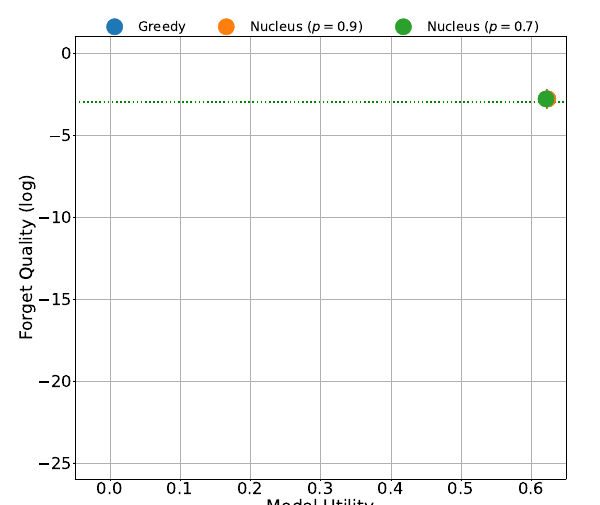
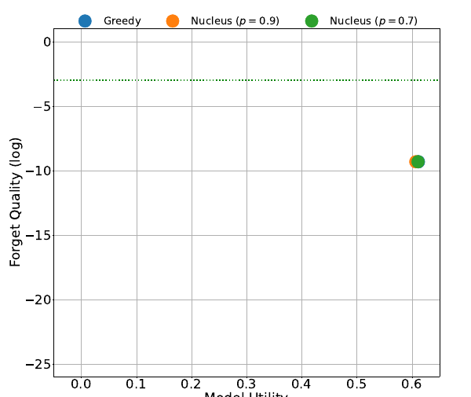
C.3 Alpha Tuning
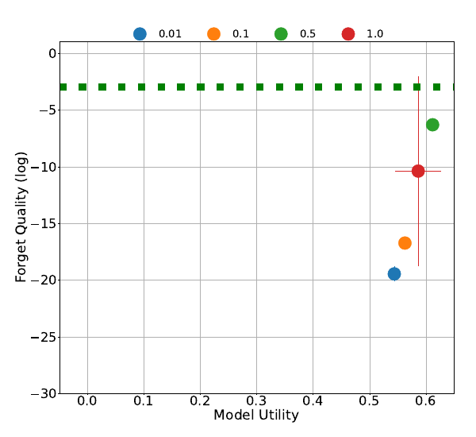
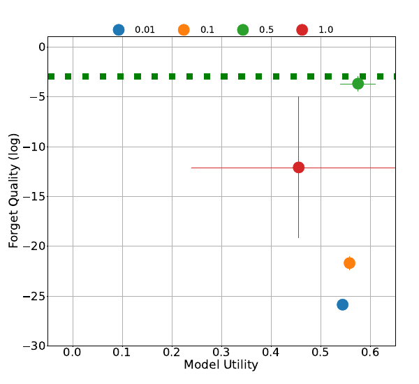
C.4 Scaling
Algorithm 算法 |
Training 训练 |
Test 测试 |
|---|---|---|
Grad Ascent 梯度上升 |
8 H200s | 1 H200 |
Grad Diff 梯度差分 |
OOM 显存不足（OOM） |
1 H200 |
NPO NPO |
OOM 显存不足（OOM） |
1 H200 |
UCD UCD |
2 L40s | 4 H200s |
C.5 UCD vs. UCS
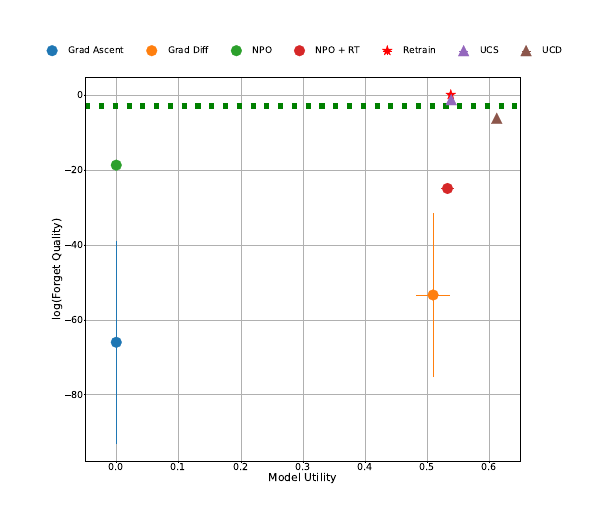
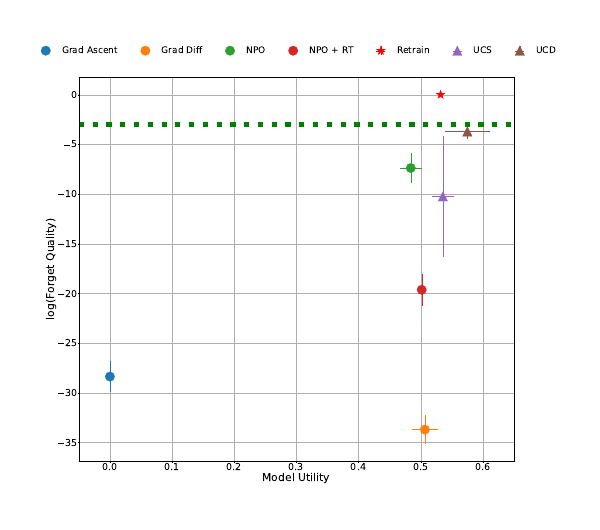
Appendix D Additional MUSE Results
We provide additional results for Sections 5 and 6 that were not present in the main paper for MUSE News.
D.1 Bootstrapping
Algorithm 算法 |
VerbMem on 遗忘集 \bm{\mathcal{D}_{\texttt{\bf forget}}} 上的逐字记忆 |
PrivLeak 隐私泄漏 |
KnowMem on 遗忘集 \bm{\mathcal{D}_{\texttt{\bf forget}}} 上的知识记忆 |
KnowMem on 保留集 \bm{\mathcal{D}_{\texttt{\bf retain}}} 上的知识记忆 |
|---|---|---|---|---|
Retrain 重新训练 |
20.99 ± 0.42 | 1.07 ± 1.12 | 38.08 ± 2.13 | 46.15 ± 1.49 |
UCD UCD |
20.5 ± 0.56 | 9.55 ± 6.65 | 36.38 ± 0.9 | 43.87 ± 1.37 |
NPO + RT w/ UCD NPO + RT 配合 UCD |
1.41 ± 0.82 | 63.91 ± 3.53 | 25.53 ± 0.95 | 28.09 ± 1.49 |
NPO + RT NPO + RT |
1.02 ± 0.83 | 64.58 ± 3.22 | 28.78 ± 2.85 | 34.27 ± 2.16 |
D.2 Sampling
Sampling 采样 |
VerbMem on 遗忘集 \bm{\mathcal{D}_{\texttt{\bf forget}}} 上的逐字记忆 |
PrivLeak 隐私泄漏 |
KnowMem on 遗忘集 \bm{\mathcal{D}_{\texttt{\bf forget}}} 上的知识记忆 |
KnowMem on 保留集 \bm{\mathcal{D}_{\texttt{\bf retain}}} 上的知识记忆 |
|---|---|---|---|---|
Retrain 重新训练 |
20.99 ± 0.42 | 1.07 ± 1.12 | 38.08 ± 2.13 | 46.15 ± 1.49 |
Greedy 贪心解码 |
20.5 ± 0.56 | 9.55 ± 6.65 | 36.38 ± 0.9 | 43.87 ± 1.37 |
Nucleus () 核采样（p=0.7） |
19.69 ± 0.82 | 9.55 ± 6.65 | 35.74 ± 1.13 | 42.44 ± 1.18 |
Nucleus () 核采样（p=0.9） |
18.92 ± 0.73 | 9.55 ± 6.65 | 33.73 ± 1.14 | 40.34 ± 1.62 |
D.3 Alpha Tuning
Alpha Alpha（引导强度） |
VerbMem on 遗忘集 \bm{\mathcal{D}_{\texttt{\bf forget}}} 上的逐字记忆 |
PrivLeak 隐私泄漏 |
KnowMem on 遗忘集 \bm{\mathcal{D}_{\texttt{\bf forget}}} 上的知识记忆 |
KnowMem on 保留集 \bm{\mathcal{D}_{\texttt{\bf retain}}} 上的知识记忆 |
|---|---|---|---|---|
Retrain 重新训练 |
20.99 ± 0.42 | 1.07 ± 1.12 | 38.08 ± 2.13 | 46.15 ± 1.49 |
| 0.01 | 56.96 ± 0.69 | -100.0 ± 0.0 | 44.25 ± 0.22 | 42.64 ± 1.14 |
| 0.1 | 53.29 ± 1.29 | -100.0 ± 0.0 | 44.44 ± 0.72 | 43.14 ± 0.27 |
| 0.5 | 26.85 ± 0.48 | -99.86 ± 0.05 | 40.95 ± 0.48 | 45.65 ± 0.84 |
| 1.0 | 20.5 ± 0.56 | 9.55 ± 6.65 | 36.38 ± 0.9 | 43.87 ± 1.37 |
D.4 UCD vs. UCS
Algorithm 算法 |
VerbMem on 遗忘集 \bm{\mathcal{D}_{\texttt{\bf forget}}} 上的逐字记忆（越低越好） |
PrivLeak 隐私泄漏 |
KnowMem on 遗忘集 \bm{\mathcal{D}_{\texttt{\bf forget}}} 上的知识记忆（越低越好） |
KnowMem on 保留集 \bm{\mathcal{D}_{\texttt{\bf retain}}} 上的知识记忆（越高越好） |
|---|---|---|---|---|
Retrain 重新训练 |
20.99 ± 0.42 | 1.07 ± 1.12 | 38.08 ± 2.13 | 46.15 ± 1.49 |
UCD UCD |
20.5 ± 0.56 | 9.55 ± 6.65 | 36.38 ± 0.9 | 43.87 ± 1.37 |
NPO + RT w/ UCD NPO + RT 配合 UCD |
1.41 ± 0.82 | 63.91 ± 3.53 | 25.53 ± 0.95 | 28.09 ± 1.49 |
UCS UCS |
27.06 ± 0.47 | -80.44 ± 0.69 | 39.75 ± 0.34 | 46.69 ± 0.54 |
NPO + RT w/ UCS NPO + RT 配合 UCS |
3.0 ± 1.14 | 59.84 ± 4.85 | 36.11 ± 2.55 | 39.27 ± 1.68 |